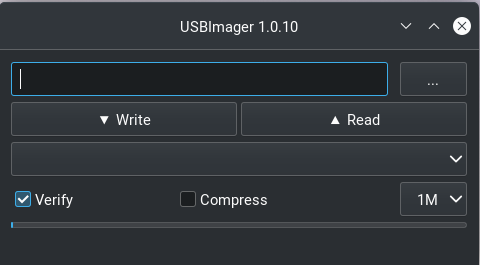

PopOS Installation
This section describes a process that can be used to install PopOS on a computer system that uses a UEFI based hard drive, which is the most comman type sold in standard Windows and Linux computers. In addition, these instructions assume that the reader has access to a working computer to download some necessary files.
NOTE: This instructions in this section were crafted for a Dell XPS computer that came pre-installed with Ubuntu Linux. Their may be some extra steps not described in this document for someone using a computer that was pre-installed with windows. These steps will occur in the beginning of the process to prepare the computer when in Bios mode prior to installation. The reader of this document should investigate these steps prior to beginning the process as outlined in this document.
Pre-Installation Activities
Before we start the Arch Linux installation we need to download an Arch Linux iso file and flash the distribution to a thumb drive.
Download an ISO file.
Navigate to the PopOS directory where you can see download options for different computer configurations. As of hte date this document was written there are three options for Intel, AMD chips with older NVIDIA grpahics cards, one for Intel, AMD chips with newer NVIDIA graphics cards, and one for Raspberry Pi boards. Determine which option is applicable to you and click download.
Flash the Distribution to a Thumb Drive
Once the iso file has been saved to a thumb drive we need to flash the
distribution to the drive so we can use it as a bootable drive for the
installation process. There are several utility programs that can be used
to transform a thumb drive into a bootable drive, but I prefer to use
USB Imager. The following image
shows an example of the download options in these
USB Imager
Pick the option that is best suited to the computer you are using to the operating system you are using to download and flash the thumb drive. Once you click on an option it should download an installer. Once you have installed USB Imager you should have access to a GUI that looks like the image below.
It is usually best to leave the .iso file in the Downloads directory where it
was placed when you retrieved it from the PopOS Store
Next click on the three dots in the upper right icon to search for your thumb drive in
the filesystem. Ensure that the verify button is checked, then click on
the Write icon. This will start the process of flashing the .iso to the
flash drive. The entire process may take a few minutes to complete. Once the
process is complete, your thumb drive should be relabelled automatically to
reflect the version of PopOS that was flashed to it.
Arch Linux Linux Installation
Now that the thumb drive has been flashed with the PopOS .iso file,
we are prepared to use it as a mechanism to install PopOS Linux on your computer.
Ensure that the computer is powered off, and insert the thumb drive into its interface
with the computer. Also, if possible try to complete this process with a hard
link internet connection in case their are issues with wireless during the
install process.
Boot your computer into the Bios mode by turning the computer on and then repetatively depressing the F12 key. Once booted into Bios mode you should see an option for different boot menus, to include a boot option for your USB drive. Click on this option, and it will boot from the flash drive. This boot option is commonly known as bpooting into live mode. Once booted you should see several options, which may change from version to version; however; you should see an option for the following or something very similar.
PopOS install medium (x86_64, UEFI)
Use the up or down arrow keys to navigate to this option if you are not already hovering on this option. Click enter, and this will enter into the Arch Linux installation process.
NOTE: The instructions listed above may not work for a computer that has a Bios tailored for windows. There may be some bios options that you will have to manually change, but these are beyond the scope of this document.
From this point on, the PopOS installer will guide you through the process.
I highly recomment clicking yes to the option for encrypting the hard drive.